既然有Cisco AnyConnect VPN 服务端的搭建教程，那么肯定也要有 客户端使用教程哇。
Cisco AnyConnect VPN服务端教程：使用Ocserv 手动搭建 Cisco AnyConnect VPN服务端
一键安装脚本：『原创』Ocserv 搭建 Cisco AnyConnect VPN服务端 一键脚本
下载客户端
Windows / Mac 客户端可以去我的 逗比云 下载。
Android 客户端也可以去 Google Play 或 逗比云 下载。
IOS 客户端则是去 APP Store 下载。
注意：Windows XP系统不支持 AnyConnect客户端。
Windows客户端 使用方法
我是 Windows 7 / 10 系统，安装客户端后是在C:\Program Files\Cisco\Cisco AnyConnect Secure Mobility Client文件夹。安装后默认没有创建快捷方式，需要自己创建，可以去上面的文件夹里去找vpnui.exe文件，或者去 开始菜单中寻找 Cisco文件夹。
运行客户端后，会看到如下图界面，很简单，不过我们需要先设置一下。
我们先点击 窗口左下角的 齿轮 按钮，进入设置界面。
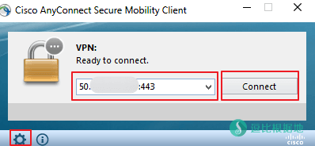
然后如图把 最后一个选项 Block connections to untrusted servers 前面的勾 去掉，这个指的是阻止链接不信任的服务器证书（因为我的AnyConnect服务端教程是自签的SSL证书，所以需要取消勾才能链接），然后我们直接关闭这个窗口并回到上图的客户端链接窗口。
直接输入 ip:端口（例如 1.1.1.1:443） 并点击 Connect 连接按钮。
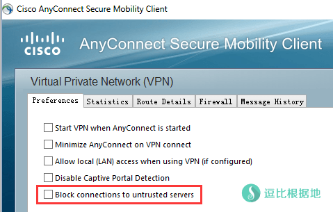
因为我的AnyConnect服务端教程是自签的SSL证书，所以会提示服务器证书不信任，我们勾选如图所示的选项(以后忽略这个服务器证书的提示)，然后点击 Connect Anyway 按钮继续。
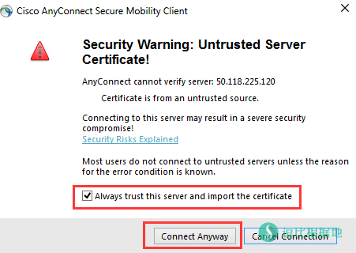
然后依次输入 VPN账号的用户名和密码。
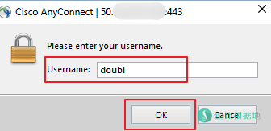
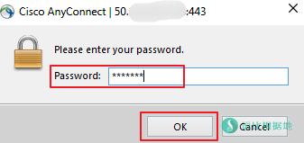
连接成功后，会提示服务器消息（VPN服务端可以设置），我们点击 Accept 接受连接。
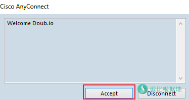
如果正常，那么我们的 VPN客户端将如下所示：
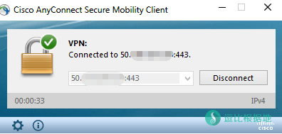
你可以打开 www.ipip.net 来看一下你的IP是否是你的VPN IP，记得关闭ShadowsocksR等其他代理软件！
Android客户端 使用方法
因为我只有 Android设备，所以就只能写 Android的客户端使用方法（IOS应该差不多）。
下载安装 AnyConnect客户端并打开后，我们可以看到客户端同样十分简洁。
我们先如 Windows教程一样设置一下 阻止不信任的服务器。
点击APP右上角的 三个点，进入设置界面。
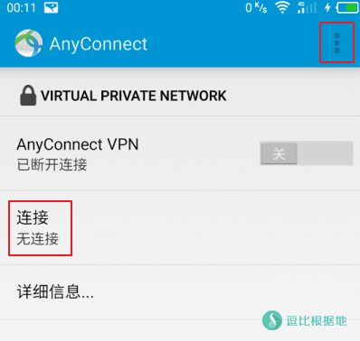
然后如图所示，取消 阻止不信任的服务器 后面的勾，然后返回上一个界面。并点击 链接 选项。
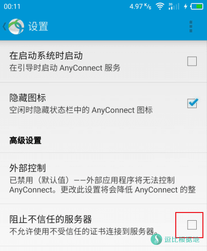
默认没有VPN连接，所以需要添加，我们点击 添加新的 VPN 连接 按钮。
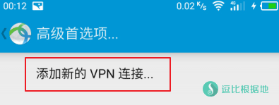
填写 服务器地址为 ip:端口 （如 1.1.1.1:443），说明是可选的，就是起个名字，其他不用管，点击 完成 按钮即可（截图中没有）。
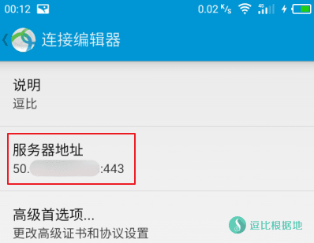
然后我们又回到了一开始的 AnyConnect客户端界面，点击 AnyConnect VPN的开关按钮开始链接VPN。
因为我的AnyConnect服务端教程是自签的SSL证书，所以会提示 证书不可信，点击 继续 按钮即可。
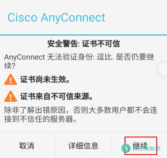
然后分别输入 VPN账号的用户名和密码。
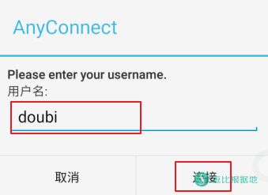
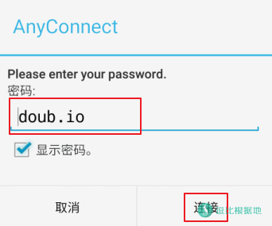
连接成功后，会提示 VPN的消息（VPN服务端可以设置），点击 接受 按钮。
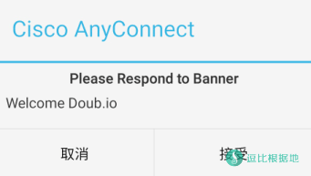
然后 AnyConnect会尝试创建 VPN连接，手机一般都会提示如下信息，选择 我信任此应用，然后点击 确定 按钮即可。
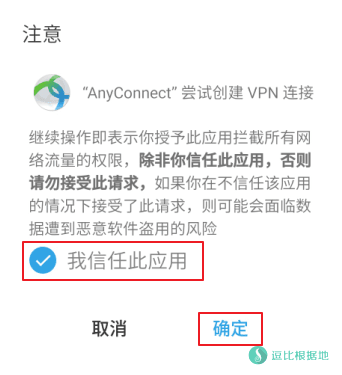
转载请超链接注明：逗比根据地 » Cisco AnyConnect VPN Windows/Android 平台客户端使用教程
责任声明：本站一切资源仅用作交流学习，请勿用作商业或违法行为！如造成任何后果，本站概不负责！

Cisco AnyConnect VPN 实际上只能在思科设备上使用，因此才有人开发了个 ocserv 用于让其他设备也能使用思科VPN。
就是我们在用的思科VPN的客户端，除了 IOS 安卓的是官方发布在商店里的，其他平台的客户端都是只有用思科设备的用户才能下载，所以我们现在用的思科VPN客户端都是那些人分享出来的。。。